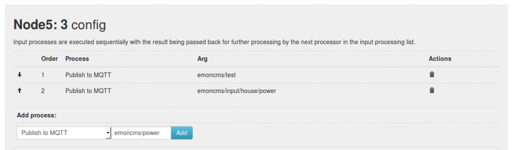

I have started an issue tracker on GitHub for emonHub, I don't have a firm enough grasp of either node-red or MQTT to implement anything by myself but if there is any interested parties I am happy to work with them to get something into emonHub.
https://github.com/emonhub/emonhub/issues/125
It was mentioned in the events module MQTT implementation thread that it might be good to have a MQTT reporter publishing MQTT and I think it could make MQTT and/or Node-Red more accessible to more users if emonHub could publish topics, which would allow expansion into MQTT, openHAB and node-red alongside existing emonHub/emonCMS setups.
emonHub was designed to replace the PHP and Python scripts used to interface the rfm2pi to emonCMS and there are individual scripts out there to interface the RFM2Pi to either node-red or openHAB, however the RFM2Pi can only be used by one of these systems as it' uses the uart serial port. I believe emonHub could actually also replace those scripts to make the RFM2Pi available to all three systems simultaneously.
Paul
Re: MQTT and node-red for emonHub
Hi Paul. I am a big supporter of MQTT and would love to see emoncms publish feed data to MQTT so that I can use it in node-red. Sorry to say that my technical knowledge of MQTT is poor, but I now have a reasonable grasp of node-red, and will help wherever I can.
I've read the most recent 'emonhub' blog post - May 2014, but I have steered clear of emonhub so far, mainly through lack of documentation, but also because it is not included within the emoncms Github account, and which raises the question - is it supported/endorsed by the OEM team at this time?
Paul
Re: MQTT and node-red for emonHub
@Paul Reed yes emonhub is fully endorsed and is the recommended method of connecting the rfm12pi to a local or remote emoncms install - currently documented via the raspberrypi setup documentation linked from the get started guide. Hosting emonhub in its own github account I think is a good thing, especially as its meant to provide the flexibility to connect to many different services, emoncms perhaps being just one of them.
Thanks Paul Burnell for continuing the discussion on this, as I've mentioned before, Im also keen on this. I like the idea of connecting emonhub to emoncms via MQTT and implementing an emoncms MQTT API for inserting/posting data. I need to start trying some of these ideas out in emoncms, including the publishing of feed data to MQTT. But also happy to support anyone else if anyone else would like to run with this too.
Re: MQTT and node-red for emonHub
What isn't described is how to replace the emoncms/raspberrypi interface (currently installed from the emoncms git account) with emonhub?
Does the current interface (is it php?) have to be removed first.
...and installation, is it a git clone from the Modules directory?
Paul
v8.3.6
Re: MQTT and node-red for emonHub
Yes your quite right, I should also archive the old raspberrypi module in the github and add a note to the top of the readme there. I will try and put together a blog post detailing the switchover procedure. I think emonhub has proven itself quite well over the last few months since the installation guides and new sd card switched over to it.
Yes the first step would be to remove the raspberrypi emoncms module and then install emonhub and configure emonhub as detailed here https://github.com/emoncms/emoncms/blob/bufferedwrite/docs/setup.md
Re: MQTT and node-red for emonHub
Hi Paul, you're not the first to mention the lack of emonhub documentation and I intend to document as soon as I can. There were 3 of us developing emonHub at first and I was going to focus on the documentation, but since I'm now developing emonHub alone the coding has taken priority (which I'm quite slow at). In the meantime Trystan has documented guides on installing and setting up emonHub and there are threads about decoding and the datatypes on the forum.
As Trystan says the raspberrypi module does need to be disabled to use emonHub, that due to only one software can use the serial UART the RFM2Pi is connected to. Most users have encounted emonHub by using the Read-only image and I have been concentrating on that but there is a basic installation script to automate installing emonHub and I am happy to focus on improving the installation routine using any feedback you have.should you decide to give it a whirl.
I would appreciate any input with implementing MQTT, I totally believe emonCMS needs to publish MQTT topics to make calculated feed values available to other systems,
The implementation in emonHub would be more about publishing the data received from the RFM2Pi and other "connections" to MQTT as early as possible in real values to all interested parties.
The decoder in emonhub would be able to handle almost any numerical data format and then forward the real values to (both emonCMS and) the MQTT broker so they are almost immediately available to any device subscribing to the relevant topics rather than being passed along the line ie via emonCMS to MQTT or via node-red to emonCMS etc. Hopefully this will increase responsiveness and also standardise the software used in most cases, emonHub was designed to unify and progress the PHP, python and OEM gateway approaches to handling RFM2Pi/Jeelink data and could also provide the OEM project with an alternative to using the node-red flow or openHAB binding.
Paul
Re: MQTT and node-red for emonHub
Trystan/Paul. Thanks, and yes I'll help where I can.
I totally agree with you Paul, and as soon as Trystan completes his blog post (or with your help) I'll change to emonhub, and we can then take it from there. (I'll PM you my email address)
Paul
Re: MQTT and node-red for emonHub
...we really need to get on board nubble (Jason) & sumnerboy (Ben), they have the knowledge of MQTT to make this happen.
I'll PM both to see if they can contribute.
Paul
Re: MQTT and node-red for emonHub
I would love to help but unfortunately I have zero PHP coding experience. I would be happy to be included in the design phase however and help with discussions about how to build the MQTT component into emonCMS.
There seems to be a requirement for both import and export of data into/out of emonCMS using MQTT. I am currently using a modified emonTX Shield v2 to publish values to various MQTT topics. Since these currently can't be directly imported into emonCMS I am using a python script called mqttwarn to transform the payloads into JSON suitable for emonCMS. It would be great if emonCMS could 'subscribe' to the various topics and enable me to remove this intermediate step.
As to how this would need to be configured in emonCMS I am not certain. Perhaps the simplest way would be to allow the configuration of a parent MQTT topic, such as /home/emontx/+ (where '+' is a wildcard meaning any child topic immediately under /home/emontx/. '#' is the other wildcard type, meaning any child, or childs child, etc to any level under that parent). emonCMS would then monitor this topic and any time a new value was published update the input list in the emonCMS UI - in the same way it does currently with the JSON inputs.
The other option is to force each topic to be explicitly defined for each data input.
For exporting data it might just be as simple as allowing an MQTT topic to be specified against an emonCMS feed (optional). If present whenever the feed is updated the new feed value would be published to that topic.
We would need somewhere to store the MQTT broker configuration and it should definitely support authentication, but this could be a text only config file since it only requires a one-time configuration. The recently updated event module could then be updated to use this config rather than have its own.
Hopefully this might get the ball rolling - as I said I can't help much with any of the PHP coding but am very eager to assist anywhere else I can.
Re: MQTT and node-red for emonHub
Hi Ben
I was thinking along the same lines, to create a "Publish to MQTT" input process that can be inserted at any point in the input process chains and just requires a topic to be specified the broker details can be specified in settings.php.
I'm in the same boat with PHP so I can't comment on the best way to tackle getting MQTT into emonCMS directly, But the main reason for starting this thread was to try and create a MQTT type reporter for emonHub to publish topics so that openHAB, Node-Red and possibly emonCMS in the not to distant future, could all get the data from the RFM network (RFM2Pi or JeeLink), serial port, usb and at a later date I²C, 1-wire, Modbus etc.
emonHub is written in Python and It's modular structure should be "relatively" straight forward to add a custom reporter to. I'm very familiar with emonHub and my Python is better than my PHP (granted, that's not exactly difficult), however I have zero experience of MQTT and therefore do not fully understand what's needed. even discussing the structure of the topics helps, as emonHub and emonCMS should share a theme maybe.
Any help would be appreciated and although I know you probably don't currently have a need for the emonHub MQTT implementation as you have the nanodeRF's directly connected to emonCMS using Ethernet, however, making MQTT available in emonHub alongside existing methods could push forward the emonCMS MQTT development at a faster pace as more users will be able to "play" with MQTT without making an outright switch.
Paul
Re: MQTT and node-red for emonHub
Hi,
Im not sure where to jump in here, but I'm keen to contribute where I can. I am quite comfortable with MQTT [although Ben seems more advanced than I] and I am a much better python developer than php #zeroPhpLastWeek. So I am able to help with the design of it all at get my hands dirty coding.
I also want to add that there is also a MQTT-SN spec recently released that is developed as an extension to MQTT for sensor networks [Hope RF, Xbee, etc.]. this is designed to be wire efficient [less bytes per message]. I have my setup successfully running at home using emontx units [RFM12B at 433MHz] that send MQTT-SN messages to my RFM12PI [custom sketch/firmware operating in a MQTT gateway capacity] which sends it on serially to the MQTT broker [RSMB]. <Actually its to a python script I developed called TwistedRouter that essentially bridges serial and UDP for valid MQTT messages> Once its at the broker the conventional MQTT subscriptions apply. So right at the sensor level Im doing MQTT. From what I can gather is that emonhub is performing a gateway function [translator] between radio comms/network and other [like JSON, MQTT] enroute to emoncms.
So please consider MQTT-SN in the design process for MQTT going forward.
In terms of emoncms export of MQTT, I agree with the conversation above especially if done at the input processing level. For emoncms import....
Re: MQTT and node-red for emonHub
Hi Jason, the more hands on deck the better.
I've just read a bit about MQTT-SN and it looks quite promising, As you know we currently use JeeLib from JeeLabs. To that we have recently added a layer of data formatting to accommodate a wide range of data types. it's quite new and not yet fully embraced/utilised, plus the RFM69CW is on the horizon which offers better range and RSSI data when in RFM12 compatability mode, and can also bring encryption etc to the party if not in compatibility mode. Combined with MQTT-SN the existing RF network may be due considerable change in the coming months.
emonHub is indeed like a gateway, it's purpose is to interface with "things" and package the data into emonCMS friendly packets. it's main interface currently is the RFM2Pi as that is the predominant OEM method but as more exotic things happen, especially with all the IO we have with arduino's and raspberrypi's. emonHub will hopefully provide easy means to hook "things" up to. Possibly even taking a more modular form so custom "interfacers" can be just dropped into a folder much like emonCMS modules do now.
I believe the first 2 things that are needed are A) emonHub MQTT reporter this makes most of the existing data that is currently being reported successfully to emonCMS, available to any MQTT system eg openHAB and Node-Red. And B) Create the "MQTT process" in emonCMS so that the calculated feed value not available from emonHub are also published. This would allow users to expand into MQTT and try openHAB and node-red.
Paul
Re: MQTT and node-red for emonHub
I forked the emonhub repo and would like to collaborate on the MQTT reporter feature once i figure out the 'architecture' of emonhub.
Re: MQTT and node-red for emonHub
I must admit I have no experience with MQTT-SN, however I would possibly argue that for something like the emonHub it is probably not necessary and standard MQTT is a better fit. From what I understand MQTT-SN is relatively new compared to standard MQTT, and using it might restrict the type of brokers that would be easily supported out-of-the-box. Also, this code is going to live on mains powered nodes with ethernet connectivity - i.e. the hub - so there is no need I can see for using the even-lower overhead of MQTT-SN. The SN variant is great for battery powered sensor nodes but in this case all our sensor nodes will be transmitting RF packets (as currently) and the gateway/hub will be responsible for translating those into MQTT messages.
My initial thoughts for the order of 'things' required is;
1. Add MQTT 'subscribing' to emonCMS - so that you can send readings directly to emonCMS using MQTT (this can be synthesised currently by using mqttwarn/nodered)
2. Add MQTT 'publishing' to emonHUB - this turns the emonHUB into an MQTT gateway - receiving standard RF packets from emonTX and emonTH nodes and converting them to MQTT messages which emonCMS (1) can subscribe to
3. Add MQTT 'publishing' to emonCMS for calculated feed data - I like your idea Paul of simply adding a 'publish to mqtt' process. That is nice and clean and fits in nicely with the existing framework.
This would give us the following;
1. Any system can 'listen' in to the raw data being generated by our emonTX and emonTH nodes by subscribing to the topics being published by emonHUB. This means you could run the system with no emonCMS and still have access to all the data in raw form.
2. Any system can 'listen' in to the processed feed data calculated and published by emonCMS.
I don't think we need to be changing the way emonTX and emonTH nodes report their readings back to the emonHUB. The current proprietary RF transmission protocol is fine and the most efficient. It is only once we get onto an IP network do we need to think about using MQTT, IMHO.
Re: MQTT and node-red for emonHub
@Jason - Fantastic, When I get a chance in the next few days I will create a MQTT branch with the shell of a new reporter in place with some notes to start things off.
@Ben - I tend to agree with your points about MQTT-SN however I'm no authority on MQTT and wouldn't rule out some future implementation. But for now we would certainly need to stick with existing technology and maybe further down the line add an alternative rfm2pi MQTT interfacer if the need/demand was there.
I would normally agree with your "order of 'things' required" it seems a logical order, however in practice as "1," is probably the most difficult so may take the most time especially with limited PHP skills. As you point out getting data into emonCMS from MQTT is currently possible (in-directly) so I'm inclined to tackle the publishing 1st. but I guess there's no reason they can't be done together if Trystan's keen.
Paul
Re: MQTT and node-red for emonHub
So I have created a MQTT branch and started a MQTT reporter, it's basically just a shell with some TODO notes.
https://github.com/emonhub/emonhub/commit/fe2e00bc39ac1f14851f8d0f3311d5756c1a7826
The current big question is what to do with regard to non-current data ? the norm is to buffer all data and then forward that data (FIFO) as and when a connection is established, once receipt is confirmed that "batch" of data is deleted from the buffer. will acks and/or batch sending be possible/plausible ?
In another discussion (about the events module I think) it was generally agreed there was no reason to send the time but this may be true for openHab if only receiving "current state" data but emonCMS wants historic and missed data. Initially there appears to be 2 main approaches to this A) always include the timestamp and let the recipient sort it out B) Sort and format data within emonhub and blindly publish new data with no timestamp as a "current state" topic and also buffer/publish timestamped data in a way that can be confirmed ok for deletion (if it's possible).
When emonCMS is installed locally "current state" data should be sufficient as there should be no break in the communication therefore no missing data to buffer. However if multiple hubs are used or emoncms is network connected there is a real chance of interruptions in connectivity.
On a positive note, I think the topics can be dynamically assigned using the [nodes] section of the configuration file. Since the incoming data elements will be in a fixed order, the topic element names can be defined using a csv string, as can the nodes name. The node ID and "input" number can be used by default if no node data is defined.
Paul
Re: MQTT and node-red for emonHub
Great discussion, I think Im following, Id be happy to try the first item:
"1) Add MQTT 'subscribing' to emonCMS - so that you can send readings directly to emonCMS using MQTT".
If we where to follow the current api design for inputs, it could look like this:
topic: emoncms/input
{
"apikey": KEY,
"node": 10,
"time": UNIXTIMESTAMP,
"csv": [3120, 1200, 24.5, 22.3]
}
Or following your suggestion Ben here, perhaps? http://openenergymonitor.org/emon/node/5826
emoncms/input/10/1 3120
emoncms/input/10/2 1200
emoncms/input/10/3 24.5
emoncms/input/10/4 22.3
where emoncms/input/nodeid/variableid
or both?
I guess we would need two topics one for updating an input and the other for listening to an input? perhaps:
emoncms/input/post/10/1
emoncms/input/get/10/1
Does anyone know if it's possible to allow any client to publish to a topic but only allow an authenticated subscriber (emoncms) to subscribe to it?
I have almost written a script to do this already in an older attempt to bring mqtt into emoncms which shouldn't take long to modify: https://github.com/emoncms/emoncms/blob/mqtt/run/nodeprocessor.php
Re: MQTT and node-red for emonHub
Ok here's an initial script implementing the first option: https://github.com/emoncms/emoncms/commit/33a87d76b1f4d22b6a55a7cf41d935...
it can be run with: $ sudo php mqtt_input.php
and to test it I ran this mini publisher script:
<?php
error_reporting(E_ALL ^ (E_NOTICE | E_WARNING));
require('SAM/php_sam.php');
$conn = new SAMConnection();
$conn->connect(SAM_MQTT, array(SAM_HOST => '127.0.0.1', SAM_PORT => 1883));
$m = array(
'time'=>time(),
'node'=>10,
'csv'=>array(200,300,400)
);
$msg = new SAMMessage(json_encode($m));
$conn->send('topic://emoncms/input', $msg);
Re: MQTT and node-red for emonHub
Trystan - earlier in this thread you mentioned that you were intending to write a blog page re the process to switch from the 'emoncms' Raspberry Pi module to 'emonhub'.
You may wish to hold back on that, as Paul B has developed a script which automates the whole process, and which will be documented in due course.
I've been the guinea pig, and it ran faultlessly, stopping the service, removing the raspberry pi module and installing emonhub, all from one command, and now I have emonhub successfully running on my Git installed v8.3.6
Very slick & totally painless!
Paul
Re: MQTT and node-red for emonHub
Great stuff Trystan. I think the better approach would be a separate topic for each value, this makes it a lot easier for other systems to monitor these topics and pull out the data if required - i.e. openHAB or Node-Red.
Configuration wise you would just need to tell EmonCMS what base-topic to subscribe to, i.e. in your example 'emoncms/input/' and then it would expect topics of the form 'base-topic/nodeid/variableid'. Does the variable id have to be an int? Or could it be a string? It would be nice if we could have descriptive names for nodes and variables but I assume the EmonCMS code is written assuming they are ints?
This would mean you only have to setup the MQTT listening topic once and adding additional nodes would be automatically picked up by EmonCMS.
FYI - to subscribe to this topic you would use 'base-topic/+/+'. '+' is a single level placeholder. The alternative is 'base-topic/#' where '#' is a multi-level wildcard and will match to anything under base-topic. But I don't think we want this in case there is other data being published under these topics for example. 'base-topic/+/+' restricts to just those two levels.
Also, in answer to your question about authentication, this is broker dependent, but mosquitto (which I use) has good support for both authentication and ACL lists. So you can setup multiple users and enforce authentication when connecting, and then for each user define which topics they can read or write to. I use this a lot since my entire home automation system runs on MQTT and I don't want the irrigation controller to be able to disarm the alarm!
As for the outgoing messages, are you thinking you dump all feed values to MQTT topics always? I think I prefer Paul's idea of adding a 'Publish MQTT' input process so you can optionally add this to any of your feeds, at any point in the calculation chain. Setting up this process would require specifying a topic so would negate the need for any derived topic names like we are doing for the input side of things.
It would be good to have a single place to setup the broker connection and authentication details for EmonCMS and then all these parts of the system could use the same details - i.e. input, feed processing and the event module.
Exciting times - think this will be a great addition to this already fantastic bit of software!
Re: MQTT and node-red for emonHub
Still trying to get to grips with fully comprehending the concept of MQTT, having read a couple of articles about naming strategies including one by Martin Harizanov I'm inclined to agree with Ben's suggestion of having value level topics, It is quite possible for emonHub to assign the names and emonCMS can already accept string variable ids, the node id's currently need to be numeric, but the default numeric variable ids are automatically assigned by emoncms to "unlabeled" input variables
Would update or create input id "power" for node 10 and
will update or create input id "1" for node 10. The only reason emonHub isn't currently configured to use strings is that the bulk input doesn't accept strings and we currently only work with complete payloads of data so sending the string names is just extra baggage.
So we can currently have /nodeid/value_name with very little change but it would be much better if emoncms could accept a string node id.
Since emoncms is the main "collector of data" for monitoring would it be of benefit to make the "home" or the "complete MQTT network" the base-topic and use the wildcards to subscribe to but not save 2 or 3 levels to create a short list of all available topics. that can be selected or enabled by each node level topic to appear in the inputs page?
@ Paul & Trystan - I think a post/blog explaining why and how to make the change to emonHub would still be a good idea and coming from Trystan rather than me would highlight the OEM seal of approval in case other users have similar reservations.
https://github.com/emonhub/dev-emonhub/blob/master/README.md
Paul
Re: MQTT and node-red for emonHub
Not quite sure what you mean here sorry Paul. I don't think we want emonCMS to monitor ALL MQTT topics, i.e. '#'. Is that what you meant by 'complete MQTT network'. In my case my MQTT broker has all sorts of data flying around in various topic hierarchies, including irrigation controllers /irrigation/vege and /irrigation/lawn, and security controllers /security/alarm/armed, /security/alarm/fire, etc etc.
You definitely want to restrict emonCMS to a subset of the topic tree I think. What this what you meant in your statement above? Sorry if I have gotten a little confused!
Re: MQTT and node-red for emonHub
I agree we don't want every topic on the MQTT network to show up on the inputs page, however by using a "emoncms" subset you are restricting your self to monitoring just those topics. Using your own examples, if you were to decide further down the line that you wanted to monitor water usage and wanted emonCMS to monitor /irrigation/vege and /irrigation/lawn, you would need to rename/restructure your topics. likewise if you wanted to remove topics from the emonCMS inputs page.
One alternative would be to force the user to specify each topic which is not user friendly and would involve a lot of setup/configuration pages or files. My suggestion above was to have a emonCMS page that when opened it subscribes to /home/+/+ (or /network/+/+/+ etc) and shows a list of topics (no data values) which the user can then select or deselect the topics he wants to show in the emonCMS inputs page. When that "list" page is closed emonCMS no longer subscribes to /home/+/+ but instead just to the topics chosen.
What I'm trying to describe reminds me a lot of the "windows network printer tool" if you ever used that. not every printer on the network is short listed when you want to print, but if you click "find printers" it will list every printer on the network by network name and you can then add any of them to your printer short list.
I'm guessing this is where node-red comes in handy, I assume you would just have the one "emoncms" topic for emoncms to subscribe to and you route any topics you want to monitor into that. Which is almost what we would be doing by having a emonCMS subset, instead of each node having it's "own" topic it is in fact subscribing to the emoncms topic albeit on it's own sub-topic.
I could just see a situation where everything is put on the emoncms topic to make it available to monitor which will A) make the input page very messy and B) render the need for /home/emoncms subset unnecessary as all of /home is in /home/emonCMS too.
This is the main reason I expected implementing the "emonCMS subscribing" to be the more difficult part as I knew it would not be ideal to subscribe to lots of individual topics, but hoped there would be something more flexible and intuitive than having all sensors to be monitored subscribing to the emoncms topic and those that are not (presently) monitored by emoncms on other topics.
I hope that's a little clearer (probably not!) it sounds far more complicated than it I imagine it would actually be.
Paul
Re: MQTT and node-red for emonHub
Hey Paul,
I think I follow what you are saying. And I take on board what you are trying to say with regard to making it nice and easy to setup/configure. My view would be that anything that is publishing to MQTT will typically be configurable - i.e. you will be able to specify what topics to publish to. And as you mentioned if there is something publishing to a non-emonCMS topic there are quite a few ways to *forward* messages from one topic to another - nodered and mqttwarn are two examples.
With that in mind, I think it would make life a lot easier in emonCMS if we just state that you must specify the *root* emonCMS topic - e.g. /home/emoncms/inputs - and all inputs are expected to appear here, in a known format - e.g. /home/emoncms/inputs/emontx1/grid, /home/emoncms/inputs/emontx1/solar, /home/emoncms/inputs/emonth1/temperature etc.
I.e. <base topic>/<node>/<input>. The input page can then be nicely formatted with human readable labels and names right from the get-go.
This is how other MQTT enabled systems have been designed (in my experience). They define a topic structure and anything publishing must adhere to that structure.
I would be wary of trying to make emonCMS *too smart* in terms of allowing all sorts of different topic structures. My feeling is we would be better off enforcing some relatively strict topic formats and making life a lot easier for emonCMS.
Anyone else got a view on this?
Re: MQTT and node-red for emonHub
I've done a little more experimenting, created a development branch called mqttdev:
https://github.com/emoncms/emoncms/tree/mqttdev
This script here will read several different topic types:
https://github.com/emoncms/emoncms/blob/mqttdev/scripts/phpmqtt_input_al...
Full json:
emoncms/input {"apikey": APIKEY, "time": UNIXTIMESTAMP, "node": 10, "data":[100,200,300]}
CSV values to a specified node:
emoncms/input/10 100,200,300
value to a specified nodeid/input:
emoncms/input/10/1 100
emoncms/input/10/power 250
Theres a tester scipt here:
https://github.com/emoncms/emoncms/blob/mqttdev/scripts/examples/mqtt_in...
The problem at the moment with the topics:
emoncms/input/10 100,200,300
emoncms/input/10/1 100
emoncms/input/10/power 250
Is that you have to set the userid in the script. Perhaps the userid could be another part of the topic string? or the apikey could be put in the topic string?
Re: MQTT and node-red for emonHub
Hi Ben
I totally agree one topic for all emoncms inputs is much easier, I just didn't think it was as intuitive or flexible. I've thought about this some more and looked at various topic tree's and think there maybe another way, that is very simple as well as more intuitive.
In his blog Martin Harizanov's tree includes a natural order of node/sensor hierarchy and within each sensor or node he recommends splitting the inputs and outputs which made perfect sense when I read it, as does the idea of a single topic for emoncms to subscribe to. So since learning the topic wildcards can be used at any point in a topic's string/path, emoncms could subscribe to something like /#/input/ or if that's too generic we could use "emoncms" instead of "input". in effect "input" or "emoncms" becomes a "send to emoncms" switch at the tail of the nodes topic tree.
This would also work very well for control signals going the other way, the sensors "output" topic meaning "emonhub" or "rfm2pi" etc, that emonhub can subscribe to and broadcast the controls.
Go to see you've got something up and running Trystan, I'll have to read up on paho so that we can implement something and experiment passing some data from emonhub to emoncms.
Re: MQTT and node-red for emonHub
@Paul - yep I think we should allow any type of topic structure, and using wildcards as you suggest makes a lot of sense. But this should all still be achievable by having a single topic for emonCMS to subscribe to - i.e. the base topic. Whether that base topic has wildcards or not is up to the user. For the case of a single emonTX if might just be /home/emoncms/inputs/+/+, but if you had a number of emonTX nodes and some emonTHs, then it might be /home/energy/+/+ where each node is publishing to /home/energy/emontx1/+, /home/energy/emontx2/+, /home/energy/emonth1/+ etc. The conceptual difference between these two is that the first treats the topic as being 'owned' by emonCMS, the second the topics are 'owned' by the nodes. Either way emonCMS will always look at the last two parts of the topic string and use them for the nodeid and inputid.
@Trystan - good point re. the user/api id. Didn't think of this in terms of a multi-user environment. The question is whether you intend to host an MQTT broker for users to use with the hosted emonCMS service? Or whether each user will need to run their own broker and configure emonCMS with the MQTT connection properties, including base topic. Assuming it is the later, then all the MQTT properties would be stored against a user so we could infer the userid/apikey directly in code - rather than have to include it in the topic/payload. If a few users decided to share a broker then it would be up to them to ensure they used unique topics, by perhaps including their userid in the topic string, but this would all be supported out of the box since each user would have a different base topic.
I just think we want to try and decouple the topic string from being too emonCMS specific if possible - as this will restrict 3rd party applications from being able to easily use the data. Hence the desire for simple value only publishing, and a generic base topic where possible.
Re: MQTT and node-red for emonHub
@Paul - BTW I have read that great article about MQTT topic structures. I have based quite a lot of my topics on his ideas.
Re: MQTT and node-red for emonHub
'I just think we want to try and decouple the topic string from being too emonCMS specific if possible - as this will restrict 3rd party applications from being able to easily use the data. Hence the desire for simple value only publishing, and a generic base topic where possible.'
My thoughts too Ben, to start including apikey, ect in the topic/payload will cause needless longer term issues.
I was anticipating that the userid/apikey would be processed within emonhub?
'Simple value only' publishing gets my vote.
Paul
Re: MQTT and node-red for emonHub
Looking at this again this morning, making the base topic configurable and looking into what would be required to make it possible to use text names for nodeid's, so that we can subscribe to say (as your suggesting?):
home/energy/kitchen/cooker
where "home/energy/#" is the base topic.
Would it make sense to make the emoncms mqtt input listener able to subscribe to multiple basetopics?
Also working on creating an input processor for publishing to a MQTT topic.
It would I think be interesting to look at how flukso are doing this, I know Bart has put a lot of thought into all this and remember listening to a presentation from him about it: http://www.flukso.net/files/presentations/flukso.20121026.architecture.pdf
Re: MQTT and node-red for emonHub
Ok there's now a Publish to MQTT input processor, an input subscriber with a configurable base topic, and its possible to use text node names, all in the mqtt dev branch here: https://github.com/emoncms/emoncms/compare/mqttdev
emoncms/input/10 100,200,300
emoncms/input/10/1 100
emoncms/input/10/power 250
emoncms/input/house/power 2500
or
home/energy/kitchen/cooker 3100
The MQTT topic and sub topic are set in the settings at the top of the phpmqtt_input.php script:
$mqttsettings = array(
'userid' => 12,
'basetopic' => "emoncms",
'basetopic_sub' => "input"
);
Screenshot of the Publish to MQTT input processor:

You have to be careful not to create circular references here... as its easily possible to publish to the same input that the Publish to MQTT input processor is connected too...
Re: MQTT and node-red for emonHub
Great stuff Trystan. One question, if you allow a /# wildcard in the base topic how do you know which parts of the topic name are the node/input ids? Are you just assuming it is the last two tokens in the topic name?
i.e. base topic of /home/energy/#, a message on /home/energy/kitchen/cooker would go to node 'kitchen', input 'cooker'. What about /home/energy/kitchen/pantry/microwave?
I am not 100% sold either way, but I tend to think we are well within our rights to enforce some sort of sub-topic naming convention in order for emonCMS to handle messages, rather than just try and handle anything and everything that is thrown at it!
One idea I had was to just have a simple base topic configured as '/home/energy' in the emonCMS config file. emonCMS would then subscribe to /home/energy/+/+ and treat the first wildcard as nodeid, the second as input id. This makes it a bit easier to control what topics are being monitored rather than allowing /# wildcards. This would have to be well documented but I think is more in line with how the RF publishing tends to work, logically at least.
This would stop messages on /home/energy/+ and /home/energy/+/+/+ getting picked up by emonCMS which is quite likely if you look at the topic design blog by Martin - you can have data at any point in a topic tree.
I think it is probably a good idea to support multiple base topics, as you suggested. That way you can have data coming from multiple devices, publishing to their own topic trees, as long as they adhere to the <basetopic>/<nodeid>/<inputid> format.
Happy to discuss over email if you would prefer Trystan? PM me your email address if so.
Re: MQTT and node-red for emonHub
I got around to subscribing to the mqttdev branch this evening, but whenever I add a 'Publish to MQTT' function in an input process, not only does it not work, but it stops all other inputs from being logged to feeds.
A check of the emonhub log shows;
2014-11-02 22:07:12,244 WARNING Send failure: wanted 'ok' but got <br />
<b>Fatal error</b>: Call to a member function connect() on a non-object in <b>/var/www/emoncms/Modules/input/process_model.php</b> on line <b>644</b><br />
Paul
v8.3.6 mqttdev branch.
Re: MQTT and node-red for emonHub
Is anyone else finding the same issue?
Paul
Re: MQTT and node-red for emonHub
Hello Paul, you may need to add a $mqtt_enabled = true; to your settings.php file. I've also just added a fix to process_model.php that should get rid of the error.
Re: MQTT and node-red for emonHub
Yes, that's
much better,brilliant! now if I add a 'publish to mqtt' function to an 'input process' it works great, and I am now able to pick up the mqtt feeds in node-red which opens up the gateway to lots of interesting possibilities......for example, it took less than 5 minutes to create a NR flow to send a push alert if a feed isn't updated within a certain time period. (Notify module alternative).
However, the reverse does not work for me, and if I set up a publish to mqtt node in node-red, such as emoncms/input/12/1 or emoncms/input/house/power and send some values, they do not appear in my emoncms input list. Whilst the same named topic/subtopics in a node-red mqtt listener node does pick up the values.
I notice that you have a 'userid' item in phpmqtt_input.php script, but unsure what this is (and if it's the reason why the emoncms mqtt input function is not working for me?).
Paul
Re: MQTT and node-red for emonHub
Cool, going to try this out this weekend! Can I send MQTT messages (from a Flukso-meter) to emonhub?
Re: MQTT and node-red for emonHub
Hello Paul, may well be the userid, perhaps try setting it to 1 if there is only the one user on your system?
Alternatively you can get your user id with:
localhost/emoncms/user/get.json
Re: MQTT and node-red for emonHub
Hi Trystan, I have tried changing the userid to "1" but unfortunately emoncms still does not subscribe to topics in the suggested format. (Does it make any difference that account No 1 is the admin account??)
I have checked my user ID (MYSQL table shows just one entry and ID of "1")
No errors are evident using my browser developer console, and nothing showing in emonhub log either...
Paul
Re: MQTT and node-red for emonHub
Philippe, in answer to your question - quite possibly!
Reading the Flukso blog, I cant determine if the topic & subtopic is hardcoded by the FLM in a set format. If that is so, you would need to edit the emoncms 'phpmqtt_input.php' file to ensure that the topics/subtopics are the same.
However, as you will see from my post above, I'm not having much luck at the moment getting emoncms to subscribe to topics, so it'll be interesting to hear how you get on.
Paul
Re: MQTT and node-red for emonHub
Hello Paul, I think I found what I did wrong, in adding the publish to MQTT i broke the input reader. Should work ok now, https://github.com/emoncms/emoncms/commit/56c2062e69031e61ba87158de35534...
Re: MQTT and node-red for emonHub
Sorry, it's reporting OK but still not subscribing.
Paul
Re: MQTT and node-red for emonHub
Hmm, do you see anything in the terminal window when you run:
sudo php phpmqtt_input.php
what happens if you run the publisher example in the examples folder?
Re: MQTT and node-red for emonHub
This is what I see in the terminal window:
Re: MQTT and node-red for emonHub
I get;
...which is the topic & value that I am publishing, but not sure what the php warning means?
Edit
When I ssh '$ sudo php phpmqtt_input.php' - suddenly Node13 popped up in the emoncms inputs, and data started flowing on Key 1
...but when I exited '$ sudo php phpmqtt_input.php' it stopped updating again!
I tried it again, and got the same result, does it appear that the phpmqtt_input.php script is not being loaded unless started via ssh?
Paul
Re: MQTT and node-red for emonHub
How are you running it when your not logged in via ssh? Are you using screen (linux command)? There's no automatic deamon for it yet.
Just added the bare bones MQTT code to make Paul Burnell's MQTT Reporter publish data in the form:
emoncms/input/10/1
The changes can be found in the pull request here:
https://github.com/emonhub/emonhub/pull/126/files
There's no config or debug info yet but I've got it running here, works nicely!
@Paul Burnell do you have any thoughts on the best way to create a listener in emonhub that listens on a MQTT topic say emoncms/control and then pushes the byte data posted to that topic out onto the rfm12/69 network?
Re: MQTT and node-red for emonHub
How are you running it when your not logged in via ssh?
I just presumed that the mqtt modules would be loaded by emoncms?
Paul
Re: MQTT and node-red for emonHub
I wish it where so! we will need to create a deamon/service script to run it automatically at startup. If youd like to run it without keeping a ssh window open temporarily screen is quite useful.
$ screen
sudo php phpmqtt_input.php
exit
exit (second exit to exit ssh)
then after login:
$ screen -r (to reattach the screen)
Re: MQTT and node-red for emonHub
I think that it's probably time for me to take a step back and await further development...
Paul
Re: MQTT and node-red for emonHub
Fantastic progress guys. it's been a busy week for me so I haven't been around as much as I would of liked. but I will look closer at MQTT this week hopefully.
Since I now have a I²C interfacer up and running, with several circuits being polled every 5 secs, the "I²C Master" runs in it's own thread sending and receiving I²C data using queue's to link to the main interfacer thread, this should be easy to port over to the JeeInterfacer so that a MQTT client can run in a seperate thread and add frames to a queue for the JeeInterfacer to pick up and broadcast. I was planning on trying it with the "packetgen mod" too.
@Trystan, thanks for getting the ball rolling again on the reporter, I have some ideas I would like to explore for the control side in general, I hope to implement some basic "routing" at the same time to escape the "report everything to all" mode currently used on the monitoring side. In the meantime if you want to try your hand at a "MQTT mod" for the JeeListener I will have a go at porting the thread and queue changes over, how does that sound ?
With regard to control topics, although the actual names can be anything I believe the topics should point to the node via the hub and interfacer eg emoncms/control/emonhub/rfm2pi/10/relay or similar as in time emonhub(s) will be reachable via emoncms and there is the potential to have several hubs each with several networks (jee or other eg I²C) and routing could be tricky.https://github.com/emonhub/emonhub/issues/64
Re: MQTT and node-red for emonHub
Quick update on (the not so quick) emonhub progress, I have been looking at emonhubs threading, queuing and routing to get a uniform way of routing data out via interfacers. I think it's pretty much there now so that any interfacer can be bi-directional. Hopefully I will commit something in the next couple of days.
Paul
Re: MQTT and node-red for emonHub
Hi guys.
I just set up my network in my new house and my Pi is up and running. I'd like to find the time to dive back into emonHub. There's been a lot of talk, at least in the issue tracker. I tried to read everything. I also read this thread. MQTT is new to me, but sounds interesting.
Before anything, I'd like to catch up with the code but I'm a bit lost with all the branches. I see an MQTT branch, alright. Which version is the default ? Master ? Is it the one used in the SD cards, and/or installed by the switch script developped by Paul ? What are "development" and "testing" ? "Node rework" ? "Emoncms integration" ?
Thanks for any hint.
Re: MQTT and node-red for emonHub
Hi Jérôme, good to hear from you.
The repo branches are in various statuses, the "master" was cleared (and copied to master-backup) to make room for a "released" debian packaged version, which hasn't happened so the development is effectively the current master.
So "development" (version rc1.0) is the one in general use and on the sd card and "testing" (rc1.1) is changes queued for inclusion in next version currently being tested (predominantly by me).
There is an "MQTT" branch which is just a shell for a mqtt reporter as discussed in this thread, but hasn't got that far yet. I wouldn't worry about the others the "node rework" was one you created at the very beginning and can now be removed, the other 2 are my experiments "wunderground" has a custom interfacer to provide weather data and "emoncms_integration" has some very basic structure to comunicate with a "hub" module in emoncms.
I am currently trying to introduce some routing so that all interfacers are potentially bi-directional and can put received data on any number of emonhubs internal "busses" and independently get data from any number of "busses" so there can effectively be a "send by rfm2pi" bus and a "publish to mqtt" bus in addition to a "send to emoncms by http" bus, It's almost there just finding it difficult to find the time to work on it right now, so progress is slow.
Currently rc1.0 is on the sd card image or you can use the dev-emonhub script, for more info see Emonhub installation/update about scripts/versions/updates/upgrades and the sd card image etc
Paul
Re: MQTT and node-red for emonHub
OK so "everyone" use development, and developers use testing.
So the process for a developer is to clone, checkout testing, then code each new feature in a dedicated branch, send the branch to Github for integration in testing. And, likewise, if I want to add something to the MQTT branch, I derive a dev branch from there, send it to Github for integration in MQTT branch.
If I'm absolutely confident in what I'm doing, I could be tempted to commit directly in testing or MQTT, but if we are several persons on the same branch, we may run into trouble doing so.
I hope I get the time to get a grab of all that happened in the last months, and then have more implication in the conception/development process.
Re: MQTT and node-red for emonHub
That's pretty much it, I'll try and bring the "issues" up to date with the more recent developments etc, it will be great to have you on-board again.
Paul
Re: MQTT and node-red for emonHub
Aha, you've all been busy little bees. Off to install this. Thanks.
Re: MQTT and node-red for emonHub
Has any further progress been made with MQTT integration, and is it still being developed
Paul
Re: MQTT and node-red for emonHub
Hi Paul, I haven't been developing MQTT directly but I am trying to spend time on changing the way emonHub passes data internally to facilitate bi-directional interfacers so that MQTT, I²C, RF and serial data can all be sent out to nodes from emonHub.
This would then allow one or more MQTT interfacers to be set up to listen for subscribed messages and also publish them. So I'm trying to do this before we invest too much time in a potentially redundant reporter and so that these core changes can be accommodated in the interfacer design from the beginning rather than adapting it later. It's still a bit rough around the edges but I do have a "routing" version working.
Paul
Re: MQTT and node-red for emonHub
Sounds like a great addition Paul - look forward to having a look.
Re: MQTT and node-red for emonHub
Cheers - I'm still a bit slow on the coding front but I think the concept works well, hope to get something on github for you guys to comment on as soon as I can.
Re: MQTT and node-red for emonHub
Thanks for the update Paul, and looking forward to trying the next version.
Paul
Re: MQTT and node-red for emonHub
Sounds great Paul, interested to hear more about how your making it bidirectional, Im still thinking about MQTT integration but havent had much time to work on it over the last couple of weeks.
Re: MQTT and node-red for emonHub
I have at last posted a working version of the concept to the "experimental" branch of emonhub, It is exactly that "experimental", so if you try it (and I hope you do) please do not use this on live valuable data. See the "experimental" issue tracker for more details.
I have successfully passed data around from interfacer to interfacer and involved packetgen. This is still work in progress and my working I²C interfacer hasn't been ported over oor finished (ie the control side) the code should now be modular enough and the routing definable enough to make proper use of MQTT and other control methods.
@Tystan - I see your new heating controller uses MQTT and some emonhub stuff, maybe this could be used as a forrunner to an emonhub MQTT interfacer? I will take a closer look at it with a view to creating a basic interfacer soon.
Dave(schism) and Jérôme are back on the firm now so hopefully things can move somewhat faster once their up to speed again.
Paul
Re: MQTT and node-red for emonHub
Experimental first draft of an MQTT interfacer just committed. It's able to pub and sub messages ok, I haven't done the processing of the sent received data yet but it's a working mqtt client.
As well as topic structures and packet formats there is also security to consider too I guess,
Re: MQTT and node-red for emonHub
I am probably a bit confused here, but is it possible for EmonCMS to have an MQTT listener for receiving values directly? Or will we always need something to translate the MQTT publishes to JSON HTTP requests which EmonCMS can receive and process?
I won't be running EmonHub since all my nodes already publish MQTT messages over my LAN, so I was hoping this MQTT subscription stuff could be built into EmonCMS itself.
Or am I dreaming?!
Re: MQTT and node-red for emonHub
Hi Ben
I'm pretty sure the intention for emoncms was to be able to both subscribe and "publish via an input process". emonHub's MQTT implementation is more about funneling the data to emoncms. Because emonhub can subscribe to several topics across multiple interfacers each with different targets, it means emoncms can subsribe to one topic and emonhub can not only pull together several topics and forward then to emoncms on that one topic but also send serial, rfm, I²C, gpio and more to emoncms via mqtt too,
In addition to emoncms functionality, emonhub can also push mqtt to rfm or I²C etc or transmit the mqtt packets comng out of emoncms over RFM etc. emonHub is all about connectivity, It will give emoncms (as well as openHAB and nodered) almost realtime control access to the rfm network and the other resources.
Plus you have the buffering. any data that can reach the Pi is then buffered, for example our internet connection has gone down twice in the last 3mths for over 12 hrs but I haven't lost a single data packet.
I think emoncms mqtt slowed a bit because emonhub was lagging behind, hopefully now emonhub is able to use mqtt we can progress with both and develop a common standard for topics and payload structures.
Paul
Re: MQTT and node-red for emonHub
Great news - thanks Paul for taking the time to explain that!
Re: MQTT and node-red for emonHub
Thanks Paul, great to see the mqtt experimental branch development work, yes I was think perhaps the rfmpi2mqtt.py script that Im using that's based on your emonhub decoder work could be a forerunner I just wanted at this stage to get a better understanding of requirements, I've been experimenting with new server side code instead of emoncms and a cut down hardcoded version of rfm12demo too.
One of the things I was wondering about was whether it might be useful to integrate MQTT into emonhub in a more fundamental way, perhaps HTTP dispatchers could be separate scripts that subscribe to the emonhub node topic.. but then there are problems with how you then generate the HTTP requests for emoncms if MQTT messages are of the individual variable format (rx/room/temperature -> 18.5) as it may be hard to recombine and send as a single request, I added it as an item in the development questions at the bottom here while I was thinking about it. There's something appealing about hanging dispatchers on an mqtt 'bus' with each dispatcher being a separate script as it could make for more modular code but then it may be more trouble than its worth.
@summerboy the emoncms mqtt listener is in the mqttdev branch under the scripts folder, just tested it to work again today.
https://github.com/emoncms/emoncms/tree/mqttdev/scripts
Re: MQTT and node-red for emonHub
@Trystan - I read the notes you linked to above and see your point about combining data to save on connections/bandwidth at emoncms.org. I would expect a properly configured MQTT broker would be able to handle this type of load, but anything to reduce load is probably worth considering.
From my perspective I run a local MQTT broker and emoncms instance and would much prefer to have a simple topic structure of /rx/node/variable -> value, with no time component at all. This simplifies things greatly and allows my time-dumb Arduinos to simple post values as and when they can and leave all the time store stuff to emoncms. It also means I have full decoupling of emoncms from the MQTT stream - and allows other systems like openHAB to use the same stream.
Although I see the benefit of the emonhub buffering data during network outages and being capable of uploading that data to emoncms.org. I would imagine this is very useful to a lot of people using emoncms.org.
So I see two options;
Option 1 we have two modes of operation in the emoncms MQTT subscriber - one for emonhub data (which will include timestamps and 'packaged' data streams) and one for generic data - which is a simple /rx/node/variable -> value stream.
Option 2 is to force local installs like myself to run an instance of emonhub which subscribes to my simple data streams and packages up the data into a format readily readable by emoncms (as you alluded to). This simplifies the emoncms code but makes life a bit more tricky for anyone not currently running emonhub.
Feels like we (I should really say 'you guys') are starting to make good progress with this stuff!
Re: MQTT and node-red for emonHub
Having given this a bit of thought I have a couple of idea's to throw out there.
Firstly rather than have 2 independent "methods" of MQTT input how about using a "keyword" in the topic and it's position identifies the topic format.
for example if emoncms subs to home/emoncms/# and receives messages from these topics:-
A) /home/emoncms, comparing the index of the keyword "emoncms" with the topic length tells us it's the final level and from that we could assume the payload is in the normal "json bulk upload" style of a list of "time,node,val1,va2,val3" frames.
B) /home/emoncms/10, comparing the index of the keyword "emoncms" with the topic length tells us there is one topic level to the right of the keyword, this can be taken to be the nodeid. The payload can be a string of values or key:value pairs maybe.
C /home/emoncms/10/temperature, this time 2 levels to the right are found by comparing the index of "emoncms" to the topic length, so that can be taken to be node and input. The payload could be just a single value or value=123, time=141234567, unit=kwh
An additional benefit of this is the subscribed topic could be "home/#" and still catch home/groundfloor/grannyannex/kitchen/emoncms/10/temperature, we would effectively be putting the # wildcard in the middle of the topic eg "home/#/emoncms", "home/#/emoncms/+" and "home/#/emoncms/+/+" in one.
I'm unable to write this in php but have written something in python that could be used to start from.(attached)
Next to enable emonHub to collect individual mqtt messages and pass them to emoncms using "bulk" by either the existing route or by the MQTT method above, we could modify emoncms to accept "null placeholders" in frames of data so if emonhub receives a MQTT message from say /home/emoncms/10/temperature it could establish the index of the temperature input from the [nodes] data in emonhub.conf and if it is the 4th input pass a data frame of time,node,null,null,null,temperature to the reporters buffer for inclusion in the next batch.
This is a surprisingly simple amendment to emoncms input which I have previously had working so I will find the edit and submit it for consideration to git.
lastly, to be able to use input names and keep the existing bulk upload etc working we could use emoncms's input "description" field so that the "numeric name" is retained and the field in which we currently manually enter a "descriptive name" could be used to look up inputs by name instead. I've looked into this and although I think I could fumble though it it's probably best left to the experts, but a new input route that calls alternative create_input() and get_inputs() should probably do it (eg create_input_with_desc() and get_inputs_by_desc()).
Something along these lines should allow a local emoncms to get fully addressed topic's (just for you Ben!) or MQTT messages to be "buffered" by emonhub to send by html or mqtt (or both?). and allow naming of nodes and inputs without breaking any existing use of the numbered inputs. It also simplifies subscription for emoncms in a way that emonhub could also subscribe to if not feeding emoncms directly. My python mock up of A) also has the ability to enable/disable each of the topic formats, so emoncms.org could easily accept only A) to reduce traffic.
Re: MQTT and node-red for emonHub
Something along these lines should allow a local emoncms to get fully addressed topic's (just for you Ben!)
Well, it was Ben's birthday a couple of days ago!
Paul
Re: MQTT and node-red for emonHub
How did you know that?!
Re: MQTT and node-red for emonHub
Moderator training & intuition!
Paul
(or maybe that google has for some reason added your birthday to my calendar (facebook/twitter??))
Re: MQTT and node-red for emonHub
Ha - yes I do recall seeing a birthday cake when I went to do a Google search on the 12th. They obviously feel the need to share that with everyone ;).
If it gets me a feature request accepted then I am all for it ;)!!
Re: MQTT and node-red for emonHub
It must hurt being aware that the whole world knows that you are 63!
Paul
(completely off topic)
Re: MQTT and node-red for emonHub
Is there anything google doesn't know ?
Just submitted a pull request for the "null placeholders"
Re: MQTT and node-red for emonHub
Wow! not a grey hair in sight :-)
Re: MQTT and node-red for emonHub
Sh!t - does it have my age as well...
Not many grey hairs on my head...not many hairs full stop.
Re: MQTT and node-red for emonHub
Although not directly linked to MQTT I have also submitted a pull request to emoncms to include a facility to "fetch" several feed values in one request. Initially intended to "fetch" data for displaying on emonGLCD etc but the proposed "routing" ability in emonHub would mean the same data could be published over MQTT.
This could go hand in hand with the suggestions above to enable users to have the option of a local MQTT network with remote emoncms with emonhub bulk posting topics via http as well as retrieving calculated or accumulated feed data and publishing it locally,
Re: MQTT and node-red for emonHub
Thanks Paul, merged it in.
Re: MQTT and node-red for emonHub
Cheers Trystan. I will create a new thread post some notes on the new features. Did you see the post about emonHub, emoncms and MQTT ideas about 10 posts back, before the banter ? Any thoughts?
My second point was taken care of by one of the merges and just needs utilizing by emonhub however the first point would need the python "on_message" I attached ported/integrated into php/emoncms and then expanded to actually record the data and the last point would also need some php work too. I happy to have a go if you think it can fly, but would probably benefit from your own expertise. I think it tackles the points you and Ben have raised or at least comes close.
Paul
Re: MQTT and node-red for emonHub
Thanks Paul, yes trying to think through it, so many options..
To recap your post and add a couple of other options
A) /home/emoncms → "time,node,val1,va2,val3" (CSV)
A) /home/emoncms → {"10":{"time":141234567,“power1”:123, “power2”:123}} (json)
B.1) /home/emoncms/10 →{“power1”:123, “power2”:123} (json)
B.2) /home/emoncms/10 → 123,123 (csv)
C.1) /home/emoncms/10/temperature →123 (single value)
C.2) /home/emoncms/10/temperature →value=123&time= 141234567&unit=kwh (url encoded)
C.3) /home/emoncms/10/temperature →{“value”:123, “time”:141234567, “unit”:kwh} (json)
C.4) /home/emoncms/10/temperature →141234567,123,kwh (csv)
Problems: B1, B2 ordering of json and csv may be different
C2: url encoded might be a useful format
C4: csv here is ok as the ordering can be specified as time,value,units
Agreed that base string "/home/emoncms/" can be flexible.
Not sure about putting the name in the description field. Perhaps emoncms doesnt need to know anything about the nodeid of the node that the nodeid only gets as far as emonhub's decoder where it is mapped to a name. Or maybe there is an advantage of passing both, maybe we could rename description to nodename and name to nodeid...
also interested in looking at changing the HTTP API to achieve consistency and moving to using GET, POST, PUT, DELETE request methods, we could make the above accessible under
POST http://emoncms/nodes/#
POST http://emoncms/nodes/kitchen/temperature 17.4 (post body)
GET http://emoncms/nodes/kitchen/temperature -> would return 17.4...
Re: MQTT and node-red for emonHub
I guess the answer to the problem of json/csv ordering is how its dealt with in emoncms at the moment. i.e if csv is used the variable name has to be the csv value index, and can then be written using json as follows:
A) /home/emoncms → "time,node,val1,va2,val3" (CSV)
A) /home/emoncms → {"10":{"time":141234567,“1”:123, “2”:123, "3":123}} (json)
Re: MQTT and node-red for emonHub
A2 should be:
data=[
{"node":10, "time":141234567,“power1”:123, “power2”:123},
{"node":10, "time":141234577,“power1”:123, “power2”:123},
{"node":10, "time":141234587,“power1”:123, “power2”:123}
]&sendat=141234592
for bulk data to work. or
data=[
{"node":10, "time":141234567,"variables":{“power1”:123, “power2”:123}},
{"node":10, "time":141234577,"variables":{“power1”:123, “power2”:123}},
{"node":10, "time":141234587,"variables":{“power1”:123, “power2”:123}}
]&sendat=141234592
if time and node are not to be reserved names.
I wonder if the difference in overhead is significant between the above format using names and the current format (on a busy server with hundreds of updates of this kind per second -it may not be significant given that disk io is the main bottleneck)
data=[
[141234567,10,123,123],
[141234577,10,123,123],
[141234587,10,123,123]
]&sendat=141234592
Re: MQTT and node-red for emonHub
Hi Trystan, there are indeed many, many options.
A) was primarily aimed at bulk uploads such as [[time,node,val1,va2,val3][time,node,val1,va2,val3][time,node,val1,va2,val3]] but there is no reason why a single frame of values can be passed, pretty much as we currently have with "bulk". Each frame would be processed individually as CSV so I'm not quite sure how that would work with named inputs (yet anyways) plus are manes counter productive in compacting a "bulk upload"?
I think something was "lost in translation" here maybe. or did you mean inputname and inpudid? I was referring to using the inputs "description" field to hold the inputs name rather than replacing the automatically generated "numeric name". CSV can't be added to inputs that have a text "name".
Currently when a new input is created in emoncms by passing csv to it, the incrementing id number is saved as the inputs "name" these numbers or more importantly the order of the numbers is important for subsequent data arrivals to be added to the correct input. We then tend to give the input a name which goes in the inputs "description" field and is never referenced it's just for display, like a unit. If that "Name In The Description Field" could be used to "get_inputs()" we could use names without overwriting the numeric id in the "name" field so that CSV and json can be used side by side. So
would not be an issue as the csv in B2 would be passed using the values position in the string to determine it's "name" (numeric id) as we currently do and json in B1 would be processed by using the "description"("Name In The Description Field")
I think a consistent api format is a very good idea and a more human readable http api may have benefits too. If you were to unify and remap the input api then that would be the perfect time to introduce a change in input fields so there is a "Position in csv string" id number and a "input name" text id
Re: MQTT and node-red for emonHub
Ahh you've been busy while i was replying !!!
That is the bottom line yes but it can easily be got around using the description field. Only users making a switch from json by name to either bulk uploads or mqtt would be affected and all they need to do to be compatible is replace each nodes input names with incrementing numbers starting at 1.
Regards the names in bulk upload, I'm not against it at all but I'm not seeing a real benefit and although the extra traffic and workload may not be much it's a lookup at both ends plus redundant bytes on the network not to mention the extra dev work. If we retain the input numbering AND have naming (in the desc field) there would be no real purpose for named bulk uploads.
Even individual inputs arriving at emonhub for passing to emoncms using the bulk api will be [[time,node,val1][time,node,null,val2][time,node,null,null,val3][time,node,null,null,null,val4]] .
Re: MQTT and node-red for emonHub
Hi,
i am a noob to the emon system. I have got the emonpi all running. How do i connect to the Mqqt from outside the pi? ie other controllers sending mqqt messages.
Paul.
Re: MQTT and node-red for emonHub
I too want to try access the mosquito running on the emonPi. ( im also new to emonCMS )
Im using the preconfigured SD card image ( v8.5)
I had a look at mosquitto.conf and i think it should allow connections from anywhere/one but i cannot connect to it from another machine on the network.
Is there a change i need to make to access mqtt ?
Re: MQTT and node-red for emonHub
Ah... just found the answer in this thread.http://openenergymonitor.org/emon/node/11668
Run :
sudo iptables -A INPUT -p tcp -m tcp --dport 1883 -j ACCEPT
Cheers..